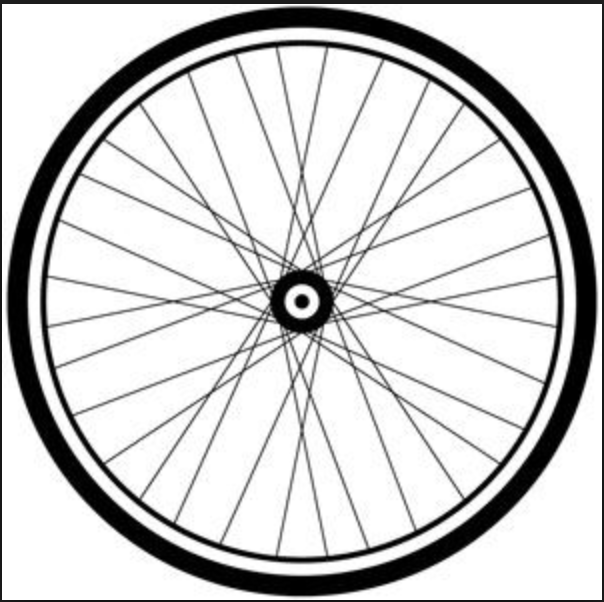

Bike Sharing: Analysis of Metro Bike Sharing Trip Data Obtained from Users
The following is an analysis of data obtained from a sample of 132428 bike share users.
Most Popular Start Station:
Most Popular End Station:
Analysis of Routine Usage, Number of Monthly Pass and Flex Pass Holders:
Average Distance (in kilometers) of Users:

Division of Trip Routes
| Type of Trip Route |
Amt of Riders |
| Round Trip |
|
| One Way Trip |
|